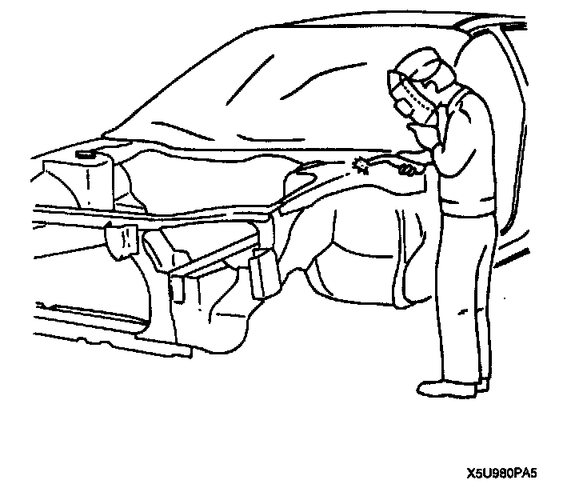
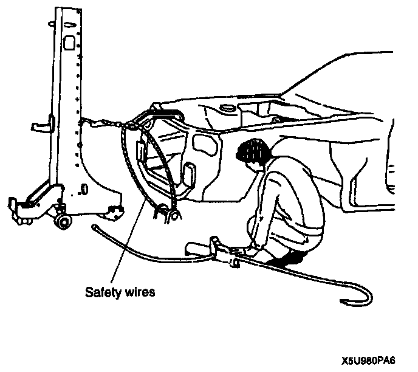
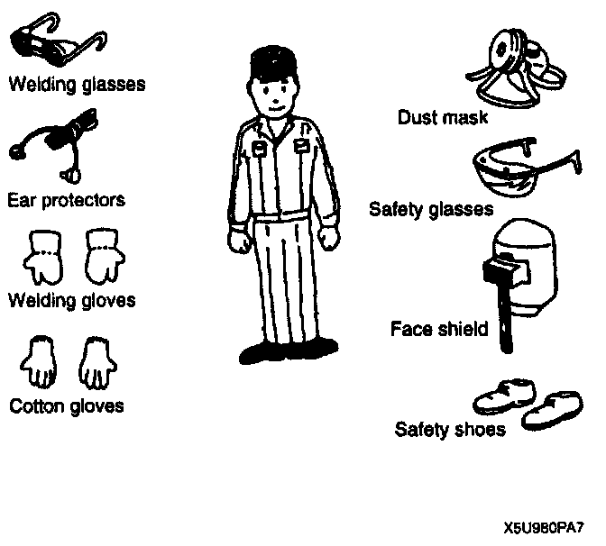
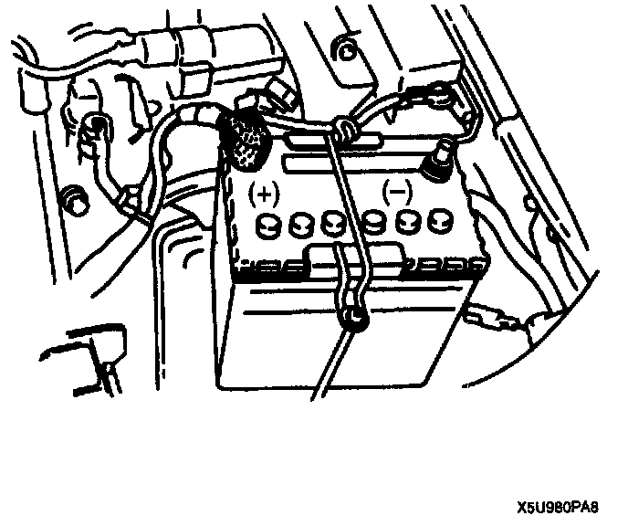
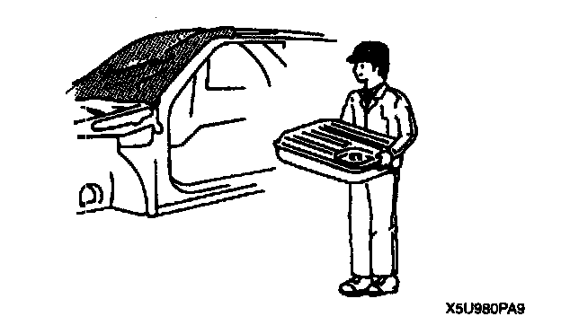

Body and Frame: Service Precautions
SERVICE PRECAUTIONSArrangement of Workshop
- Arrangement of the workshop is important for safe and efficient work.
Vehicle Protection

- Use seat covers and floor covers.
- Use heat-resistant protective covers to protect glass areas and seats from heat or sparks during welding.
- Protect items such as moldings, garnishes, and ornaments with tape when welding.
Use of Pulling Equipment

- When using pulling equipment, keep away from the pulling area and use safety wires to prevent accidents.
Safety Precautions

- Protective head covering and safety shoes should always be worn. Depending upon the nature of the work, gloves, safety glasses, ear protectors, face shield, etc., should also be used.
Prevent Short Circuits

- When removing a wiring harness or electrical component, disconnect the negative battery cable.
Remove Dangerous Articles

- Remove the fuel tank before using an open flame in that area. Plug connection piping to prevent fuel leakage.